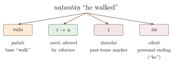

Chapter 11: After the Tolkāppiyam: Grammars of Tamil, Kannada, Telugu and Malayalam¶
dēśabhāṣalanduṁ deluṁgu lessa
Among the languages of the land, Telugu is the finest.
— the god to the king in a dream, in Kṛṣṇadevarāya’s Āmuktamālyada 1.15 (early 16th century)
11.1 Introduction¶
The Tolkāppiyam (Chapter 10) stood alone for many centuries. From the 9th century onwards, however, each of the four literary Dravidian languages acquired grammars of its own, and these works form one of the largest bodies of grammatical writing in India outside Sanskrit (Table 11.1). They are usually passed over in a sentence. This chapter looks inside them: how they are organised, what categories they use, how they handle the Sanskrit vocabulary that flowed into every southern language, what they reveal about the languages of their time, and how their classifications led to the modern discovery of the Dravidian family.
| Language | Work | Author | Date; written in |
|---|---|---|---|
| Tamil | Iṟaiyaṉār Akapporuḷ | attributed to Iṟaiyaṉār | commentary c. 8th c.; Tamil |
| Tamil | Vīracōḻiyam | Puttamittiraṉ | 11th c.; Tamil |
| Tamil | Naṉṉūl | Pavaṇanti | early 13th c.; Tamil |
| Tamil | Ilakkaṇa Viḷakkam | Vaittiyanāta Tēcikar | 17th c.; Tamil |
| Kannada | Kavirājamārga | Śrīvijaya (or Nṛpatuṅga) | c. 850; Kannada |
| Kannada | Karṇāṭakabhāṣābhūṣaṇa | Nāgavarma II | 1140s; Sanskrit |
| Kannada | Śabdamaṇidarpaṇa | Keśirāja | c. 1260; Kannada |
| Kannada | Karṇāṭakaśabdānuśāsana | Bhaṭṭākalaṅka | 1604; Sanskrit |
| Telugu | Āndhraśabdacintāmaṇi | attributed to Nannaya | date disputed; Sanskrit |
| Telugu | Āndhrabhāṣābhūṣaṇamu | Ketana | 13th c.; Telugu |
| Telugu | Appakavīyamu | Appakavi | 1656; Telugu |
| Telugu | Bālavyākaraṇamu | Paravastu Cinnaya Sūri | 1858; Telugu |
| Malayalam | Līlātilakam | anonymous | late 14th c.; Sanskrit |
| Malayalam | Kēraḷapāṇinīyam | A. R. Rājarāja Varma | 1896; Malayalam |
Three features recur. First, the language in which a grammar is written is itself a statement. Some grammars of Kannada and Telugu were composed in Sanskrit sūtras or verses, others in the language they describe, and the choice says something about the readership and about the status of the language. Second, every one of these traditions had to classify words by origin: native words, Sanskrit words taken over unchanged, Sanskrit words reshaped, and words from neighbouring languages. These classifications, a Dravidian development of an idea also found among the Prakrit grammarians (Chapter 9), turned out to be the starting point of the modern discovery of the Dravidian family. Third, the grammars belong to the process that Sheldon Pollock has called vernacularisation, in which regional languages became languages of literature and courtly culture on the model of Sanskrit (Section 1.6). Grammar was one of the things a literary language had to possess, and a king who sponsored one claimed a share of the prestige that grammar had long conferred on Sanskrit (Pollock 2006).
11.2 The Tamil Tradition after the Tolkāppiyam¶
11.2.1 Between the Tolkāppiyam and the Vīracōḻiyam¶
The Iṟaiyaṉār Akapporuḷ, a short treatise on the poetics of love ascribed to Iṟaiyaṉār, a name of Śiva, is known together with a prose commentary traditionally attributed to Nakkīrar (c. 8th century). The preface of this commentary is the source of the legend of three successive literary academies (caṅkam) at Madurai, the first two lasting thousands of years and losing their works to the sea; historians treat the legend as a later construction, though it gave the Caṅkam poems their name. In the 10th century the Jain Amitacākarar’s Yāpparuṅkalam and its abridgement, the Yāpparuṅkalakkārikai, became the standard works on prosody (Section 10.7).
11.2.2 The Vīracōḻiyam and the five divisions¶
The first major Tamil grammar after the Tolkāppiyam was written by a Buddhist, Puttamittiraṉ (Buddhamitra), a local chief who named it after his overlord, the Cōḻa king Vīrarājendra (r. 1063–1070). The Vīracōḻiyam is composed in the kalitturai verse form and was explained by a commentary of Peruntēvaṉār. It is remarkable for two reasons. It deliberately describes Tamil through the categories of Sanskrit grammar: its first section is called canti (Sanskrit sandhi) and it introduces the Sanskrit kāraka relations and secondary derivatives (taddhita) into Tamil grammar. And it treats grammar in five divisions instead of the Tolkāppiyam’s three: letters (eḻuttu), words (col), subject-matter (poruḷ), prosody (yāppu) and figures of speech (aṇi). The last of these was adapted from Daṇḍin’s Kāvyādarśa, which had also been rendered into Tamil as the Taṇṭiyalaṅkāram, probably in the 12th century (Zvelebil 1995).
The scheme of five divisions (aintilakkaṇam) became standard. When later Tamil scholars spoke of “grammar” (ilakkaṇam), they meant this whole field of letters, words, poetic subject-matter, metre and ornament. The scope was far wider than Sanskrit vyākaraṇa, which left metre and poetics to separate sciences (Chapters 3 and 8). The Tamil grammarian was by definition also a theorist of literature.
11.2.3 The Naṉṉūl¶
The Naṉṉūl (“The Good Book”) of the Jain scholar Pavaṇanti, written in the early 13th century under the patronage of a Gaṅga chief named Cīyagaṅkaṉ, is the most successful grammar in the history of Tamil. It covers only the first two divisions, letters and words, in some 460 short verse rules (nūṟpā), arranged in two books of five chapters each. Its success came from its clarity. Where the Tolkāppiyam is archaic, allusive and in places obscure, the Naṉṉūl is systematic, and it describes the Tamil of the medieval literary language rather than that of the Caṅkam age. For seven centuries it was the grammar that Tamil students learned by heart, and it was still the basis of school grammar in the 19th century (Zvelebil 1995).
The work opens with a long general preface (potuppāyiram) that is a small treatise on scholarship. It defines what a proper treatise (nūl) is, lists the faults a treatise must avoid and the “devices” (utti) by which it expounds its subject, and describes the qualities of a good teacher and a good student and the right manner of teaching and learning. The list of thirty-two devices, which the Tolkāppiyam also gives, is the Tamil counterpart of the Sanskrit tantrayukti, the methods of scientific exposition listed in the Arthaśāstra and the medical classics. The preface’s grading of students, in which the best are compared to the swan that separates milk from water, has been quoted in Tamil schools ever since.
The Naṉṉūl also refines the Tolkāppiyam’s analysis of sounds. It keeps the thirty primary letters, twelve vowels and eighteen consonants, but recognises ten dependent letters (cārpeḻuttu) instead of three. Besides the āytam and the shortened i and u, it counts the consonant–vowel syllable (uyirmey), the prolonged vowels and consonants used in verse (aḷapeṭai), and the shortened forms of ai, au, m and the āytam that occur in particular positions. These are not new sounds. They are positional variants, and the Naṉṉūl’s willingness to list them is a sign of its interest in exact description of the spoken and recited language.
11.2.4 Analysing the word¶
The Naṉṉūl’s most influential contribution is its analysis of the inflected word. It divides words into those that can be analysed into parts (pakupatam) and those that cannot (pakāpatam), and it names up to six components of an analysable word: the base (pakuti, from Sanskrit prakṛti); the final suffix (vikuti, from Sanskrit vikṛti), which marks person, number and gender; the “middle element” (iṭainilai), typically the tense marker; a linking sound (canti); an empty augment (cāriyai), which carries no meaning; and the change (vikāram) that any of these may undergo. The standard school illustration is naṭantāṉ, “he walked” (Figure 11.1).

The Sanskrit terms prakṛti and vikṛti were borrowed. The analysis they serve is a Tamil one, built for an agglutinative language in which a stem is followed by a string of separable suffixes (Section 10.5). It is comparable, in its own terms, to the morphological segmentation that modern descriptive grammars of Tamil use.
Like the Tolkāppiyam before it, the Naṉṉūl classifies the vocabulary of poetry into four kinds: ordinary native words (iyaṟcol), literary or modified words (tiricol), words from neighbouring regions (ticaiccol) and “northern words” (vaṭacol), that is, Sanskrit. It adds rules for the treatment of Sanskrit words. Those that contain only sounds common to both languages can enter Tamil unchanged; those containing sounds peculiar to Sanskrit must be reshaped, so that, for example, voiced and aspirated stops are replaced by the corresponding Tamil letters. This is the same procedure seen in the first couplet of the Tirukkuṟaḷ (Section 10.8).
11.2.5 Commentators, compendia and the quarrel over Sanskrit¶
The Naṉṉūl attracted a long line of commentators. Mayilainātar (perhaps 14th century) wrote the oldest surviving commentary. Caṅkaranamaccivāyar’s commentary, written in the 17th or early 18th century and revised by Civañāṉa Muṉivar, became the standard school text. In the 19th century Āṟumuka Nāvalar of Jaffna edited it for the new printed school books. Alongside the commentaries stood comprehensive compendia that again covered all five divisions. The most important is the Ilakkaṇa Viḷakkam of Vaittiyanāta Tēcikar of Tiruvārūr (17th century), nicknamed the “little Tolkāppiyam”. Another is the Toṉṉūl Viḷakkam of the Jesuit Beschi (Vīramāmuṉivar), who also wrote Latin grammars of literary and colloquial Tamil for missionaries in the 1720s and 1730s (Zvelebil 1992).
Medieval literary Tamil had in any case moved close to Sanskrit. The Vīracōḻiyam’s commentator had already suggested that Tamil grammar depended on Sanskrit, Śaiva and Vaiṣṇava commentators wrote in a Tamil heavily laden with Sanskrit, and in Kerala and parts of the Tamil country a mixed literary style, maṇipravāḷam, combined Sanskrit with Tamil or Malayalam freely (Section 11.6). The 17th and 18th centuries then saw an open argument about the relation of Tamil grammar to Sanskrit, more than a century before Caldwell. On one side, the Pirayōka Vivēkam of Cuppiramaṇiya Tīkṣitar (17th century) set out to show that the categories of Tamil grammar could be derived from those of Sanskrit, and the Ilakkaṇakkottu of Cāmināta Tēcikar (17th century) contains a frequently quoted dismissive remark, that a language with only five letters of its own hardly deserves a separate grammar. On the other, Civañāṉa Muṉivar (d. 1785), a Śaiva monk of the Tiruvāvaṭuturai monastery and an accomplished Sanskritist, answered in a long commentary on the preface and the first rule of the Tolkāppiyam, defending the independence of the Tamil grammatical tradition and the standing of Tamil as a language equal to Sanskrit. In keeping with Śaiva tradition, he held that Śiva had given Sanskrit grammar to Pāṇini and Tamil grammar to Agastya. The terms of this debate were theological and literary, not historical. Its significance is that the question later answered by comparative philology, whether Tamil is “of” Sanskrit, was already a live and contested question within the Tamil grammatical tradition itself.
11.3 Kannada¶
11.3.1 The Kavirājamārga¶
The earliest surviving Kannada literary work is not a poem but a treatise on how poetry should be written in Kannada. The Kavirājamārga (“The Royal Road of Poets”), composed around 850 at the Rāṣṭrakūṭa court, is attributed to the king Nṛpatuṅga Amoghavarṣa I or, more probably, to a court poet, Śrīvijaya. Its poetics follow Daṇḍin, and its literary side is discussed in Volume 8, Kāvya Kalpalatā. What concerns us here is its awareness of language. It defines the Kannada country as the land between the Kāverī and the Godāvarī. It names the area around Kisuvoḷal (Paṭṭadakal), Kopaṇa (Koppaḷ), Puligere (Lakṣmeśvara) and Oṅkunda as the home of the purest Kannada. It notes that usage varies from region to region. And it warns poets against incongruous mixtures of Sanskrit and Kannada. Pollock has read the work as a founding document of a regional literary culture. Kannada is presented as a language with a defined territory, a standard and a correct literary form, and so as a fit vehicle for courtly literature beside Sanskrit (Pollock 2006).
11.3.2 Nāgavarma II¶
Kannada grammar proper begins with Nāgavarma II, a Jain scholar who was instructor to the army (kaṭakopādhyāya) at the court of the Western Cāḷukya king Jagadekamalla II in the 1140s. He wrote on Kannada in both languages. His Kāvyāvalokana, in Kannada verse, is a treatise on poetics whose first part, the Śabdasmṛti, is a grammar of Kannada; his Karṇāṭakabhāṣābhūṣaṇa is a grammar of Kannada in Sanskrit sūtras with a Sanskrit commentary; and he also compiled a lexicon of the vocabulary of poetry, the Abhidhānavastukośa. The same author thus addressed two audiences: Kannada poets, and scholars trained in Sanskrit who expected a grammar to look like one of their own.
11.3.3 Keśirāja’s Śabdamaṇidarpaṇa¶
The classic grammar of Old Kannada is the Śabdamaṇidarpaṇa (“Jewel-Mirror of Words”) of Keśirāja, written in the Hoysaḷa period around 1260. Unlike Nāgavarma’s Sanskrit grammar, it is written in Kannada, in the kanda metre, with the author’s own prose commentary. Its order broadly follows the Sanskrit grammars of its day, moving from letters and their combination (sandhi) through nouns, compounds and secondary derivatives to verbs and verbal roots, words derived from Sanskrit and Prakrit, and indeclinables. What it describes, however, is Kannada as found in the works of the great poets. Keśirāja states rules and then illustrates them with lines from Pampa, Ponna, Ranna and other earlier poets, whose usage he treats as the authority for correct Kannada. This makes the grammar an anthology of the classical literature as well as a description of it.
The Śabdamaṇidarpaṇa is also a precious historical record. Old Kannada still had two sounds that later disappeared: the alveolar ṟ and the retroflex approximant ḻ, each with a letter of its own in the Kannada script, both inherited from Proto-Dravidian and both still present in Tamil and Malayalam. Keśirāja gives rules and word-lists for their correct use, which is valuable evidence for historians of the language. In later Kannada ṟ merged with r and ḻ with ḷ. He is also strict about compounds. A compound should not join a Sanskrit word to a Kannada one except under defined conditions, and the Kannada tradition calls such a faulty mixed compound arisamāsa (“enemy compound”).
11.3.4 Bhaṭṭākalaṅka¶
The last great traditional grammar of Kannada returned to Sanskrit. Bhaṭṭākalaṅka’s Karṇāṭakaśabdānuśāsana (1604), by a Jain scholar, describes Kannada in nearly six hundred Sanskrit sūtras on the Pāṇinian model, with two layers of the author’s own commentary. Its very form was an argument: Kannada, it implied, deserved a grammar as rigorous as Sanskrit’s and could be described in the same scientific language. The modern study of Kannada was founded in the late 19th century by Ferdinand Kittel of the Basel Mission. His Kannada–English Dictionary (1894), compiled with the help of Indian scholars, drew systematically on the old grammars and lexicons.
11.4 Telugu¶
11.4.1 The Āndhraśabdacintāmaṇi and its date¶
Telugu tradition begins its grammatical history with Nannaya, the 11th-century poet who began the Telugu Mahābhārata at the Eastern Cāḷukya court of Rājarāja Narendra at Rājamahendravaram. To him is attributed the Āndhraśabdacintāmaṇi, a short grammar of Telugu in Sanskrit verses in the āryā metre. Its five sections, on technical terms (saṃjñā), combination (sandhi), stems ending in vowels (ajanta), stems ending in consonants (halanta) and the verb (kriyā), follow the plan of a Sanskrit grammar. It treats Telugu as a language derived from Sanskrit and Prakrit, so that much of its work consists in stating how Sanskrit words take Telugu form.
The attribution to Nannaya is traditional and much doubted. The work is not mentioned by the 13th-century grammarian Ketana, who claims to be the first to write a grammar of Telugu in Telugu, and its earliest known commentaries are centuries later than Nannaya. Many modern scholars therefore place it well after the 11th century, though no date has been established. Whatever its date, it was accepted from the 17th century onwards as the foundational grammar of Telugu, and its authority was bound up with Nannaya’s status as the “first poet” (ādikavi) of Telugu literature (Narayana Rao 2003).
11.4.2 Ketana and the first grammar in Telugu¶
Mūlaghaṭika Ketana, a 13th-century poet who dedicated a Telugu version of Daṇḍin’s Daśakumāracarita to the great Mahābhārata poet Tikkana, wrote the Āndhrabhāṣābhūṣaṇamu (“Ornament of the Telugu Language”). It is a short grammar of about two hundred Telugu verses. Its importance lies less in its detail than in its choice of language. Ketana addressed Telugu poets in Telugu, and he gave an early statement of the classification of Telugu vocabulary that later grammarians developed (Section 11.5). Other early works are attributed to a grammarian named Atharvaṇa, among them a treatise on the derivation of tadbhava words (Vikṛtiviveka); their date and authorship are uncertain.
11.4.3 Appakavi, the commentators and Cinnaya Sūri¶
In 1656 Kākunūri Appakavi composed the Appakavīyamu, a long Telugu verse treatise on grammar and prosody, presented as an exposition of the Āndhraśabdacintāmaṇi. Appakavi tells a story of how Nannaya’s grammar had been lost and was recovered, and his work did much to establish its authority. A Sanskrit commentary on the Āndhraśabdacintāmaṇi by Ahobala became the other standard aid to its study.
The tradition culminated in Paravastu Cinnaya Sūri’s Bālavyākaraṇamu (1858), written in Telugu sūtras on the Pāṇinian pattern with great concision. Cinnaya Sūri worked as a teacher of Telugu in Madras, where Telugu grammar had been studied by Indian and British scholars at the College of Fort St. George since the early 19th century. His grammar fixed the norms of the literary language (grāndhika) so firmly that the 20th-century campaign for the spoken standard, described below, was largely a campaign against it. The colonial grammars and dictionaries of Telugu stood beside it. They include A. D. Campbell’s Grammar of the Teloogoo Language (1816) and C. P. Brown’s grammar (1840) and Dictionary, Telugu and English (1852). Lisa Mitchell has shown how in the 19th and 20th centuries these works, together with print and schooling, helped turn Telugu from one of several languages of a multilingual region into the object of an intense “mother tongue” devotion (Mitchell 2009).
These grammars described the literary language, and in each region the distance between that language and everyday speech grew over the centuries. In the early 20th century the question became a public controversy. In Telugu, the scholar Gidugu Venkata Ramamurti campaigned for the use of the spoken standard (vyāvahārika) in prose and in schools, against the defenders of the classical literary language codified by Cinnaya Sūri; the spoken standard eventually prevailed in prose, journalism and education. Similar tensions between a classical written norm and the modern spoken language shaped the standardisation of Tamil, Kannada and Malayalam, a modern counterpart of the old relationship between Sanskrit and the Prakrits (Chapter 9).
11.5 Words and Their Origins¶
Every literary Dravidian language absorbed a large vocabulary from Sanskrit and Prakrit, and every grammatical tradition developed a classification of words by origin. The categories differ in detail, but they share a common purpose, which is to decide which words a poet may use and in what form (Table 11.2).
| Tradition | Native words | Words from Sanskrit | Other classes |
|---|---|---|---|
| Prakrit grammarians (Chapter 9) | deśī (“regional”) | tatsama (identical), tadbhava (derived by sound change) | — |
| Tamil (Tolkāppiyam, Naṉṉūl) | iyaṟcol (ordinary), tiricol (literary, modified) | vaṭacol (“northern words”), unchanged or reshaped | ticaiccol (words of neighbouring regions) |
| Kannada (Keśirāja and later) | deśya, deśī (pure Kannada) | tatsama, tadbhava | mixed compounds restricted (arisamāsa) |
| Telugu (Ketana and later) | deśya (pure Telugu) | tatsama, tadbhava | anyadeśya (from other languages); grāmya (colloquial, excluded from poetry) |
In the Telugu scheme a tatsama is a Sanskrit (or Prakrit) word used with Telugu endings, as in rāmuḍu for Sanskrit rāma. A tadbhava is one reshaped according to Telugu sound patterns. The deśya words are the native core, which the grammarians recognised could not be derived from Sanskrit at all. The category of grāmya, the rustic or colloquial, marks the boundary between the literary language and everyday speech. It was this boundary that the reformers of the early 20th century set out to remove.
These classifications were descriptive tools in the service of literary correctness, not theories of language history. The Telugu grammarians in particular assumed that Telugu was in some sense a transformation of Sanskrit. Yet by setting apart a large body of native words that could not be traced to Sanskrit, they isolated exactly the evidence that a historical linguist would need. As Section 11.7 shows, this is how the comparative case for a Dravidian family was first made.
11.6 Malayalam: The Līlātilakam and After¶
The Līlātilakam, an anonymous Sanskrit treatise of the late 14th century, is the earliest work to describe the language of Kerala. It is written as sūtras with a prose commentary, in eight sections (śilpa), and combines grammar with poetics. Its subject is maṇipravāḷam, the literary style of Kerala that mixed Malayalam and Sanskrit, which it defines in its opening rule as the union of the “language” (bhāṣā) and Sanskrit. The name compares the mixture to a string of rubies and coral beads, two red stones that should blend without visible seams. The text asks which Sanskrit words may enter such verse, when they may keep their Sanskrit case endings and when they must take Malayalam ones, and which combinations are graceful and which are faults. It also distinguishes maṇipravāḷam from pāṭṭu, the song tradition composed in Dravidian letters and metres with the rhyme and alliteration of Tamil verse. In discussing the “language” it separates the speech of Kerala from the Tamil of the Pāṇḍya and Cōḻa countries. It is thus one of the earliest explicit statements that Malayalam was becoming a language distinct from Tamil (Freeman 1998). Malayalam had developed from the western dialects of the Tamil-speaking region, and it emerged as a distinct literary language in the late medieval period. From the 16th century the devotional poet Tuñcattu Eḻuttacchaṉ, who wrote extensively in a style rich in Sanskrit vocabulary and in the Grantha-derived script, was regarded as a father of literary Malayalam.
The modern grammatical study of Malayalam began with the Basel missionary Hermann Gundert. He published a Malayalam grammar (1851, enlarged 1868) and a Malayalam and English Dictionary (1872) that remains a standard historical source. It culminated in A. R. Rājarāja Varma’s Kēraḷapāṇinīyam (1896; revised 1917). As its title suggests, Rājarāja Varma set out to do for Malayalam what Pāṇini had done for Sanskrit, but he also asked a historical question: how had Malayalam become different from Tamil? His answer was a list of six changes (naya) that, he argued, separated the two languages. The best known are the loss of personal endings on the verb (puruṣabhedanirāsam), so that Malayalam avan vannu “he came” and ñān vannu “I came” share one verb form where Tamil distinguishes vantāṉ and vantēṉ, and the assimilation of nasal clusters (anunāsikātiprasaram), so that Malayalam vannu corresponds to Tamil vantu “having come”. The Kēraḷapāṇinīyam thus combined the traditional form of a Pāṇinian grammar with the comparative method of Caldwell, and it shows how quickly Indian grammarians made the new historical linguistics their own.
11.7 The Dravidian Family: Before and After Caldwell¶
Indian scholars had long known that Tamil, Telugu, Kannada and Malayalam differed in vocabulary and structure from Sanskrit, and the grammarians’ classifications of vocabulary had isolated their native core. The demonstration that they form a separate language family was made in Madras in 1816 by Francis Whyte Ellis, working with Indian scholars of the College of Fort St. George; Robert Caldwell gave the family its name and its first systematic description in 1856; and modern comparative work, above all T. Burrow and M. B. Emeneau’s Dravidian Etymological Dictionary and the synthesis of Bhadriraju Krishnamurti, has confirmed and refined the result (Burrow and Emeneau 1984; Krishnamurti 2003). The arguments themselves, and the use that was made of them, deserve a closer look.
11.7.1 Ellis and the Indian grammarians¶
Ellis’s demonstration appeared as a “Note to the Introduction” in A. D. Campbell’s Grammar of the Teloogoo Language (Madras, 1816). Campbell, following the Telugu grammarians, had presented Telugu as derived from Sanskrit. Ellis argued the opposite. He took the native (deśya) roots of Telugu, set them beside the corresponding roots of Tamil and Kannada, and showed that the three languages shared a large stock of basic roots that had no Sanskrit source. The Sanskrit element, however large, was borrowed, while the native core was common inheritance. Thomas Trautmann has shown that this argument rested on Indian scholarship. Its raw materials were the Telugu grammarians’ own distinction of deśya from tatsama and tadbhava, and lists of Telugu roots prepared by learned Indian staff of the College of Fort St. George, among them Paṭṭābhirāma Śāstri. The “Dravidian proof”, in Trautmann’s phrase, was a collaborative product of colonial Madras, not a European discovery imposed on India (Trautmann 2006).
11.7.2 Caldwell’s arguments¶
Robert Caldwell (1814–1891), a missionary in the Tirunelveli district, published his Comparative Grammar of the Dravidian or South-Indian Family of Languages in 1856 and a much enlarged second edition in 1875 (Caldwell 1856). He took the name “Dravidian” from the Sanskrit drāviḍa, noting its use by the Mīmāṃsaka Kumārila Bhaṭṭa (7th century), who refers to an “Āndhra–Drāviḍa language”. His case rested on grammatical structure as well as vocabulary: on the shared personal pronouns and numerals, among the most stable parts of any language; on agglutinative suffixation, as against the fusional inflection of Sanskrit; on the negative conjugation of the verb; on the division of nouns into rational and irrational classes, the Tamil uyartiṇai and aḵṟiṇai (Section 10.5); and on the absence of Sanskrit-type prefixes and of grammatical gender based on form. He argued that Tamil, in particular, could dispense with its Sanskrit vocabulary altogether. He also suggested that influence had run the other way, and that the retroflex consonants of Sanskrit owed something to Dravidian contact, a suggestion that later work on the South Asian linguistic area has broadly supported (Section 1.8).
Not all of Caldwell’s views have lasted. His proposed relationship between Dravidian and the “Scythian” (Ural-Altaic) languages has not been accepted. Later long-range proposals, such as a link with Elamite, also remain unproven (Krishnamurti 2003). His book also carried the racial and religious assumptions of its time. It portrayed the Brahmins as Aryan immigrants who had brought higher civilisation to the south. His earlier tract on the Shanar (Nadar) community of Tirunelveli, written from a missionary standpoint, was deeply resented by the community it described.
11.7.3 The family today¶
Krishnamurti counts about twenty-six Dravidian languages in four subgroups (Table 11.3). Many of the smaller ones are spoken by Adivasi communities in central and eastern India, and Brahui is spoken in Balochistan, far to the north-west. Shared features of the family include agglutinative morphology, verb-final word order, postpositions, a distinction between inclusive and exclusive “we”, participial constructions in place of relative pronouns, negative verb forms and the semantic gender system already described in the Tolkāppiyam, which as the earliest systematic description of a Dravidian language remains an important source for the reconstruction of Proto-Dravidian (Krishnamurti 2003; Steever 1998).
| Subgroup | Languages |
|---|---|
| South Dravidian I | Tamil, Malayalam, Iruḷa, Kota, Toda, Badaga, Kannada, Kodagu, Tulu |
| South Dravidian II (South-Central) | Telugu, Gondi, Konda, Kui, Kuvi, Pengo, Manda |
| Central Dravidian | Kolami, Naiki, Parji, Ollari, Gadaba |
| North Dravidian | Kurux, Malto, Brahui |
11.7.4 Afterlives¶
The linguistic result was sound and has been confirmed by every later study. Its social reading was another matter. In the late 19th and 20th centuries “Dravidian” became the name of a political and cultural identity in Tamil Nadu, opposed to “Aryan” Brahmin and Sanskritic culture, and Caldwell’s demonstration was cited as scientific proof of the independence and antiquity of Tamil. In 1916 Maṟaimalai Aṭikaḷ launched the “pure Tamil” movement (taṉittamiḻ iyakkam), which sought to replace Sanskrit loanwords with Tamil ones, and language became bound up with the Dravidian political movement and with opposition to Hindi (Ramaswamy 1997). In its extreme form this produced claims that Tamil was the original language of humanity. The best-known proponent was the scholar Ñā. Tēvanēyaṉ (Dēvanēyap Pāvāṇar), who tied this view to the legend of a lost southern continent. The claim mirrors the belief that Sanskrit is the mother of all languages and has no more support (Section 14.13). Modern comparative Dravidian treats Dravidian as one ancient family among the several of South Asia, with a long history of mutual borrowing with Indo-Aryan, neither its parent nor its offspring (Burrow and Emeneau 1984; Krishnamurti 2003).
11.8 Assessment¶
Measured against Pāṇini, the medieval grammars of the Dravidian languages can look derivative: many borrow Sanskrit terms, several are written in Sanskrit, and the Telugu tradition long described its language as a transformation of Sanskrit. Measured on their own terms, they are a considerable achievement. They gave four languages written norms that sustained their literatures for centuries. They described sounds and forms, such as the Kannada ṟ and ḻ or the Tamil positional variants, that would otherwise be known only from manuscripts. And they built a classification of vocabulary that made the modern discovery of the Dravidian family possible. Their history also shows that the relation of the southern languages to Sanskrit was debated by Indian grammarians long before it became a question of colonial science and modern politics.
Further Reading¶
-
Zvelebil, Kamil V. 1995. Lexicon of Tamil Literature. Handbuch Der Orientalistik, 2. Abteilung: Indien 9. E. J. Brill.. — Entries on the Tamil grammarians and works.
-
Pollock, Sheldon. 2006. The Language of the Gods in the World of Men: Sanskrit, Culture, and Power in Premodern India. University of California Press.. — On the Kavirājamārga and vernacularisation in Kannada and Telugu.
-
Narayana Rao, Velcheru. 2003. “Multiple Literary Cultures in Telugu: Court, Temple, and Public.” In Literary Cultures in History: Reconstructions from South Asia, edited by Sheldon Pollock. University of California Press.. — On Telugu literary cultures and the place of grammar in them.
-
Freeman, Rich. 1998. “Rubies and Coral: The Lapidary Crafting of Language in Kerala.” The Journal of Asian Studies 57 (1): 38–65.. — On maṇipravāḷam and the Līlātilakam.
-
Mitchell, Lisa. 2009. Language, Emotion, and Politics in South India: The Making of a Mother Tongue. Indiana University Press.. — On Telugu, print and the making of a mother tongue.
-
Trautmann, Thomas R. 2006. Languages and Nations: The Dravidian Proof in Colonial Madras. University of California Press.. — On Ellis, the Fort St. George scholars and the Dravidian proof.
-
Krishnamurti, Bhadriraju. 2003. The Dravidian Languages. Cambridge University Press.. — The standard comparative account of the Dravidian family.
-
Ramaswamy, Sumathi. 1997. Passions of the Tongue: Language Devotion in Tamil India, 1891–1970. University of California Press.. — On Tamil language devotion and politics in the modern period.